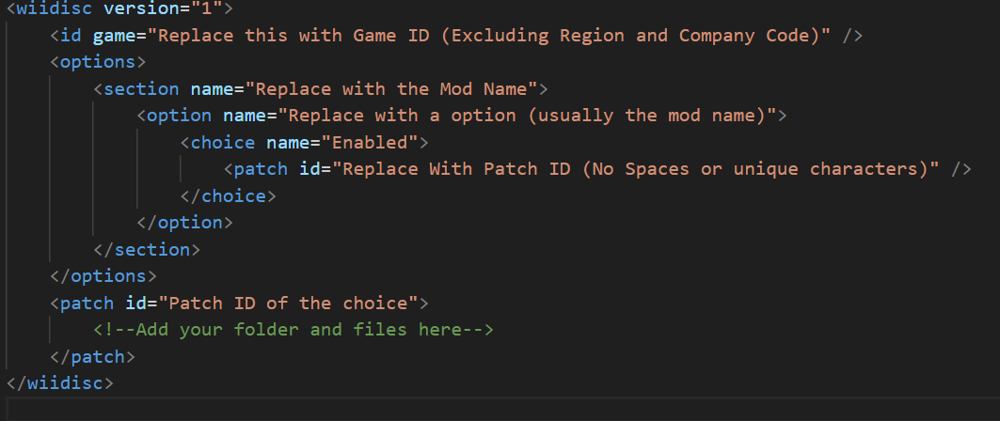
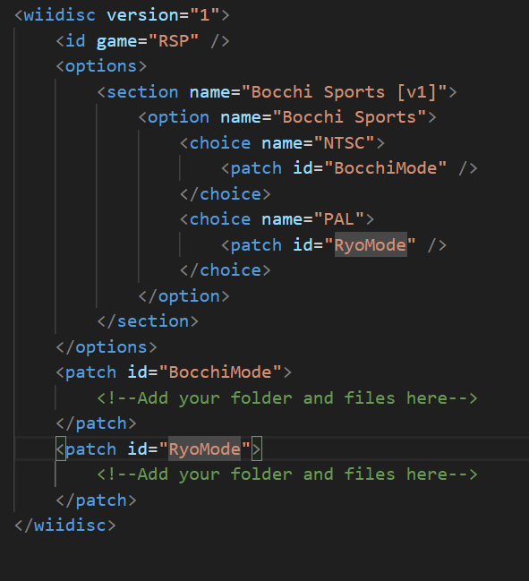
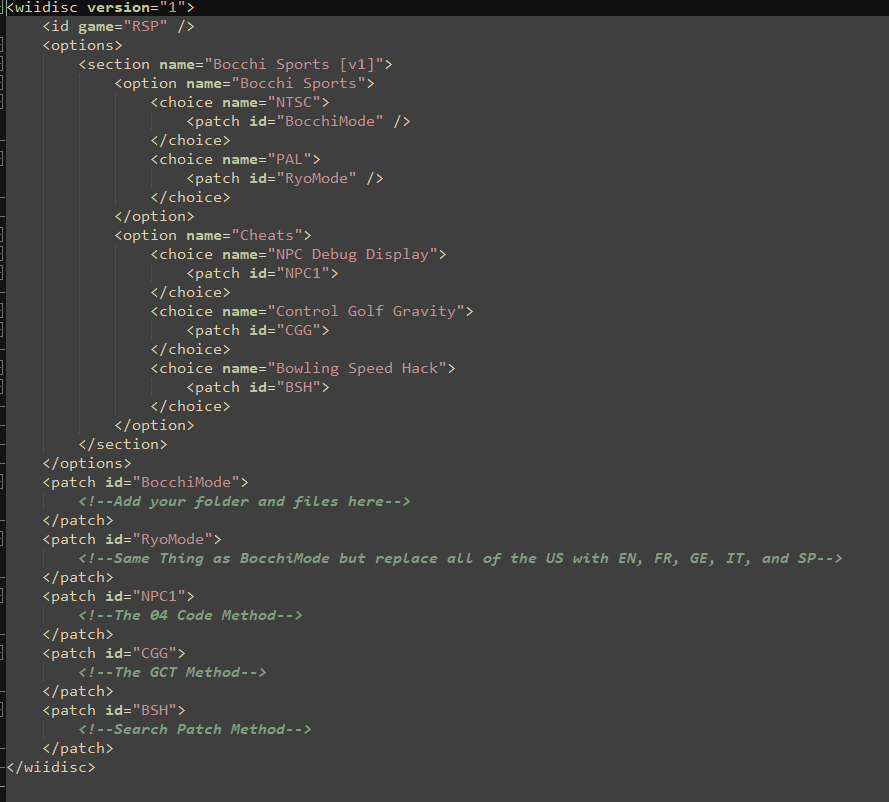
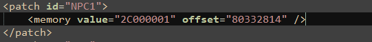
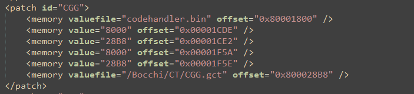
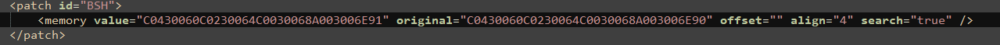

Tools:
VS Code (You can use the Web build of it)
Dolphin
Wii/Wii U Console
Disc of your game
PyiiASMH 3 (Dolphin Debug Mode works too)
This tutorial is just Riivolution XML I'll assume you already know how to add custom files and how to extract files from the disc.
First, I would recommend you downloading this template I made. In order to download it, right-click on it and click "Save link as"
Riivolution XML Template
It should look like this

I'll put my own mod example for OGWS to show you. First I'll show you how to add more choices. There are 7 things that make up a riivoltion XML (only pointing the important ones)
WiiDisc: This allows riivoltion to determine what game the mod is for.
Options: If I had to give an accurate description, it would be to power everything else as without this the whole mod wouldn't work
Section: The Page (you can have multiple in one XML)
Option: Not the same as Options, this give what options you're mod will have
Choice: The choice for the option
Patch: This is what is responsible for loading the files, folders, cheats, and more
/: Yes I included this. This is this in front of all of the other options and it means that it is the end of that thing.
Enought about that, now I'll tell you how to to more choices. After you see the /Choice you will copy over the choice name and Rename it. You are also going to want to add the Patch ID and rename that too. After that add the /choice again, copy the patch id at the bottom (including /patch) and paste it under the first /patch, and it should look like this.

To add more options just do the same thing as choice, but with options (I don't know how to explain it). Make sure to add the choices and Patches of course.

You can do the same thing for sections if you want multiple pages. Now onto the cheats, first the 04 method, this CAN work with C2 Codes if you know how to disassemble them and reassemble them as 04 Codes
Say we have this gecko code "04332814 2C000001", the address that is being used is "80332814", so we would do it like this.
Memory Patch (ignore the orginal part for now)
Replace the Memory Offset with your address and the value with your value, if you did it right it should look something like this.

The max you can do this at is 0x817FFFFF for some reason. Now the GCT method
This method isn't too good as the way GCTS work is that you can only have what you put in and nothing else or else only one will work, so only use this where you're using F6 Codes or Conditional Codes
What you are going to want to do is copy this down (Replace the valuefile with your own .gct file).
GCT Method
Code Handler
It should look like this (use my GCT Creator to make the GCT)

Now the search patch method, this is the most useful if you know how to implement it right. The other two methods only work in it's region (unless if it's an F6 code), search patches can help get rid of needing multiple codes (sometimes it does fail tho). JimmyKazakhstan has a more detailed explaination on how they work as well as generators for Riivolution Patches.
Riivolution + PowerPC + Gecko Generators
I would recommend you to look at that as he goes more in depth on how this works. It should look like this

Hopefully this all made sense to you, I'm not really good with explaining things over text, so sorry if it looks like I skipped over some stuff, I just can't explain things the best without a video.